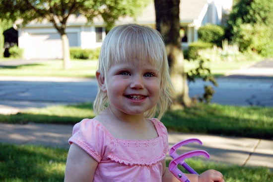

Up, Up, Uppy and Way

You know what’s spectacular? Verbal communication. Particularly the part where you can say what you want, and someone responds by giving it to you.
For example, as you may not be aware, I am rather short, and sometimes I would like to see what’s happening at greater altitudes. Previously, my only recourse in this scenario was to act cranky until a Big Person was sufficiently annoyed. Though this method is tried and true, I have learned that I can say “uppy” and someone will pick me uppy. When I’ve had enough, I can say “dow” and I’m lowered once more. If I’m dissatisfied with everything altogether, I can say “way” and we will go a-way somewhere else.
My vocabulary has expanded to the point that documenting all my words would be too exhausting. Instead, here are some highlights:
If you ask me what color something is, it’s blue. If you explain that it’s actually a different color, I will say “ohh!” in acceptance and then repeat the color’s name (provided the color is green, yellow, red, or purple.) However, if you ask again, it’s still blue.
Similarly, if I have multiple objects, I have three. I am sure of this.
I enjoy opening and closing doors, and in doing so I will repeatedly greet you happily (hi!) and bid you a fond farewell (bye.)
In the mornings, I want two things, chee and Melmo. (Translation: a cheese stick and Elmo on TV.) Mommy and Daddy try to keep a lid on these, but it’s a losing battle.
A frequent conversation:
— Person: Maddie, would you like to do something?
— Maddie: Yeah!
— Person: Are you sure?
— Maddie: No.
— Person: Really?
— Maddie: No.
If I’m riding in a car and see a motorcycle, that must be Papa (my grandpa.) More things that are Papa: any person I’m calling on the phone, and any man with hair.
I’m an ace at identifying body parts, such as legs and belbows. If you ask me about something face-related, I already know the answer — you’re pointing to your eyes. I don’t care that you’re not pointing to your eyes, the answer is eyes. OK, or nose. Eyes or nose.
Animals are interesting, and I’ve learned about some of them. For instance, puppies say, “eeeee!” All insects are bees, and should go away. Also, many kinds of animals are kitties.
Cooking in my mini kitchen is the best! I put stuff in the microwave and beep the buttons, “beep beep beep!” After some amount of time has passed, I exclaim, “ready!”
I’ve been perfecting a non-verbal game as well. It’s called “Madeline Says.” In this game, I grin with my lower teeth, then stick out my tongue, then grin with my upper teeth. You must do this with me. Following that, I do several various hand movements and expect you to mimic me. Sometimes I try to jump while yelling “drmp!”
In closing, let’s go out to my slide and we’ll watch airplanes fly uppy in the sky!


alma vogt said,
July 24, 2010 @ 5:21 pm
Happy to see Madeline again. She is growing up and is as enchanting as ever. Keep the updates coming!
Aunt Alma